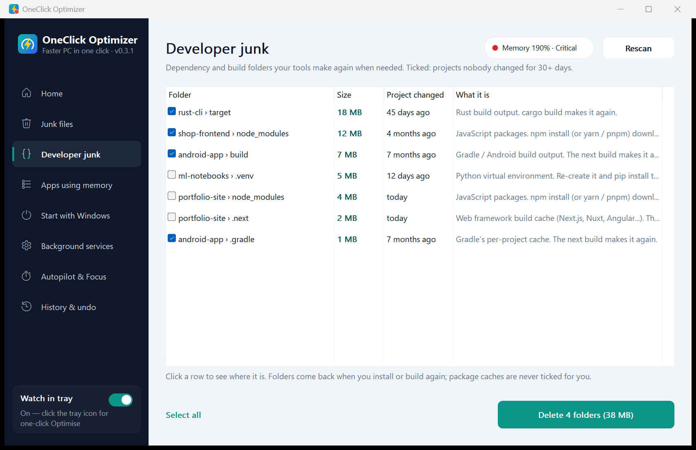
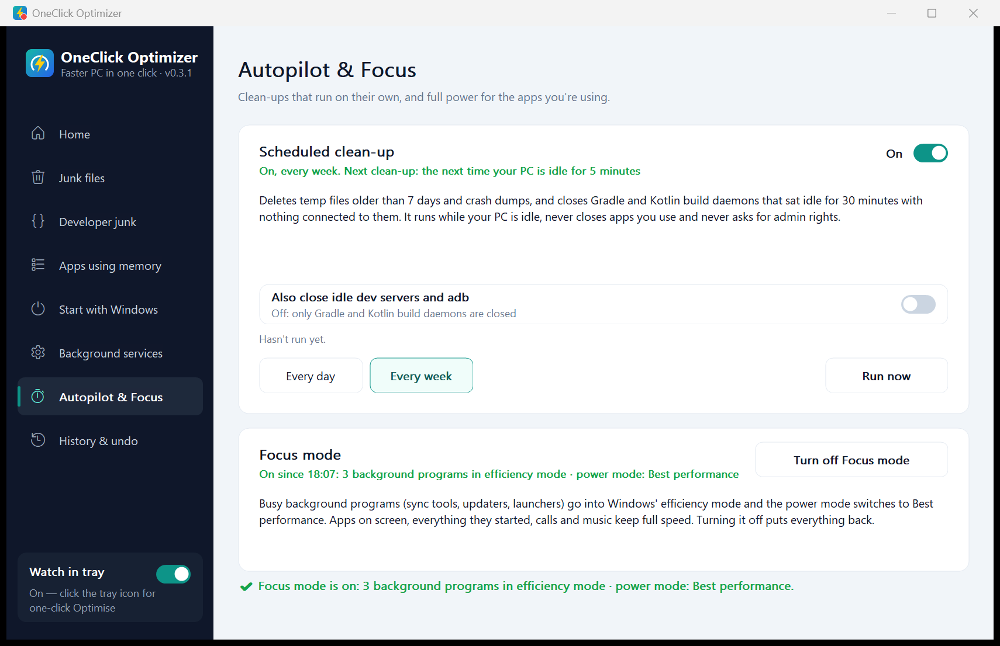
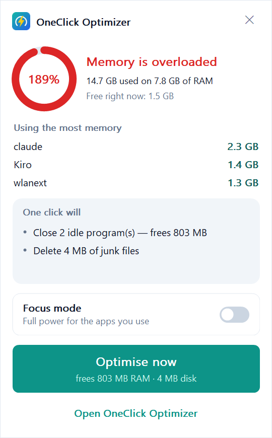

Shown first, done in one click
One click
Closes idle programs and clears old junk, after you have seen the list.
OpenOneClick Optimizer finds the idle dev tools, old node_modules and junk files slowing your Windows PC. It shows you each one, then clears them when you say so.
The app isn't code-signed yet, so Windows may say it protected your PC: choose More info, then Run anyway. It installs just for you, with no admin prompt.
Closes idle programs and clears old junk, after you have seen the list.
Opennode_modules, build folders and caches from projects you stopped touching.
OpenDaily or weekly, only when your PC is idle. Never closes what you use.
OpenBackground programs slow down so the app you are using gets the whole machine.
OpenA quiet icon that speaks up only when memory runs out or tools sit idle.
OpenEvery figure on this page was measured, and you can rerun it.
OpenNo registry cleaning, no RAM "boost", and every change listed in History.
OpenTap or swipe the cards
One file, no admin prompt. It installs just for you, and you can remove it from Settings like any app.
Every program it would close and every folder it would clear is listed before you press anything, and kept in History afterwards.
1.2 MB to download and about 3.9 MB of memory. No ads, no account, no tracking.
The app finds new versions by itself and asks before updating. Your history and settings stay as they are.
An everyday developer laptop with of RAM and CPU threads, running . When we measured, its programs had reserved on of RAM, so Windows was moving memory to disk to keep up. Measured .
Seconds to finish the same task. Lower is better.
One-click Optimise ticks only what is safe to delete. The rest is listed for you to decide.
Programs sitting idle that start again by themselves the next time they are needed.
Earlier that day, one click in the tray closed a Gradle daemon and 2 adb servers holding about 1.5 GB, and deleted 1.3 GB of junk. That comes from the app's own log.
oneclick-cli bench, which is in the download, plus the app's own memory use measured on the same PC. Run it and you get your own numbers; one laptop is not every laptop.A scan takes about two seconds and gives your PC a health score. The Optimise button lists every change it will make before you press it. Untick anything you want to keep.
It finds node_modules, Rust target, Gradle build, Python virtual environments, .NET bin/obj and the big package caches on every drive, with sizes and when each project last changed.

Autopilot runs daily or weekly once your PC has been idle for 5 minutes. It deletes old temp files and closes build daemons that sat idle for 30 minutes with nothing connected to them. Mark anything "never close" and it stays put.
Focus mode puts busy background programs into Windows' efficiency mode and switches the power mode to Best performance. Turn it off and everything goes back.

The tray icon changes colour with memory pressure. Click it for your biggest apps, what one click will do, and a Focus mode switch. It uses about 2.5 MB of memory.
It speaks up only when memory has been almost full for two minutes, when dev tools sit idle, or when a new version is ready, and it waits while you present or play full-screen.

Scanning, every detail page and undo stay free for good. Pro unlocks the rest, once, for life.
$10$20 lifetime
Pay once, keep it for life. No subscription, no monthly fee, no account. Every future update included, on up to 3 PCs. Launch price until 31 January 2027, then $20 lifetime.
| Feature | Free | Pro, $10 lifetimePro, $20 lifetime |
|---|---|---|
| Scan and fix one by onehealth score, junk files, startup apps, services, undo | Yes | Yes |
| One-click Optimisein the app and from the tray | 3 times | Unlimited |
| Developer junknode_modules, build folders, package caches | See it | Clean it |
| Autopilotclean-ups that run on their own | — | Yes |
| Focus modefull power for the apps you use | — | Yes |
Lifetime means Pro and every update for as long as the app is offered. Sales are final, so try the free version first. If Pro won't work on your PC, we fix it or refund you. Refund policy · Terms
No analytics, no ads, no account. The app asks GitHub whether a new version exists, which like any web request shows GitHub your IP address. Activating Pro sends your key and an anonymous PC tag to the store, Polar, never your PC name. Scans, history and settings stay in %LOCALAPPDATA%\OneClickOptimizer.
This website counts page visits with Vercel Web Analytics, which sets no cookies and keeps no personal data. The full privacy policy